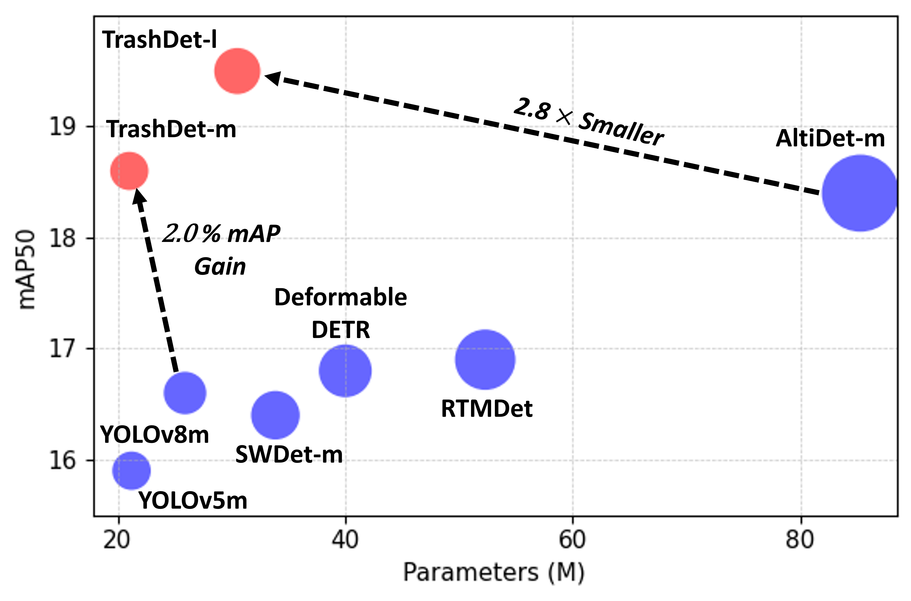
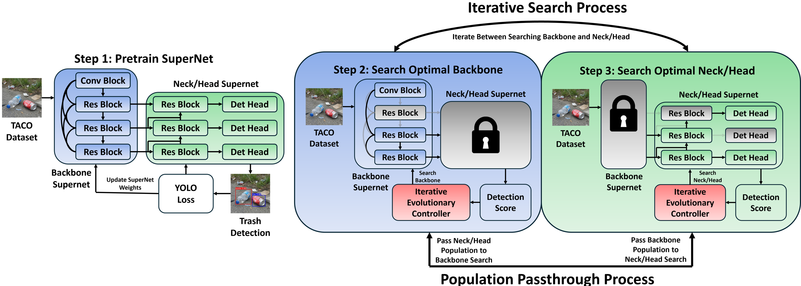
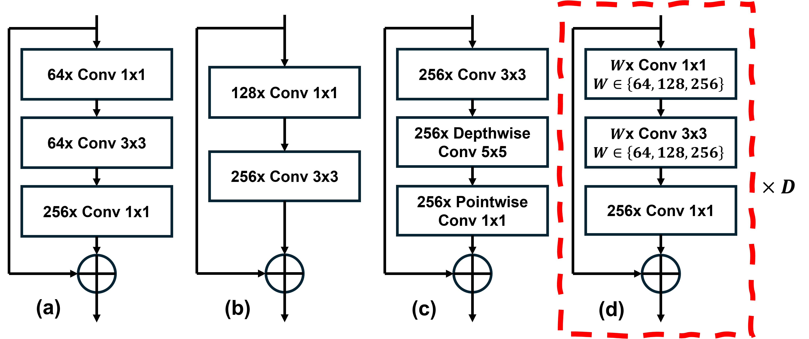
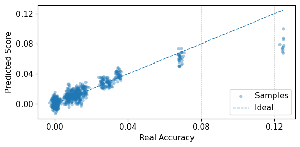
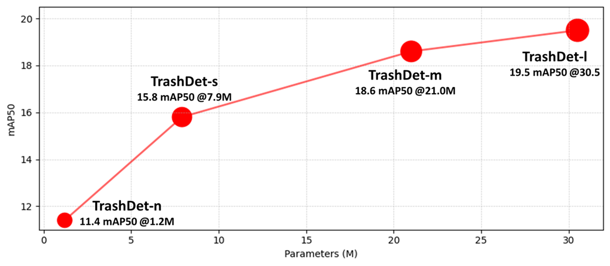
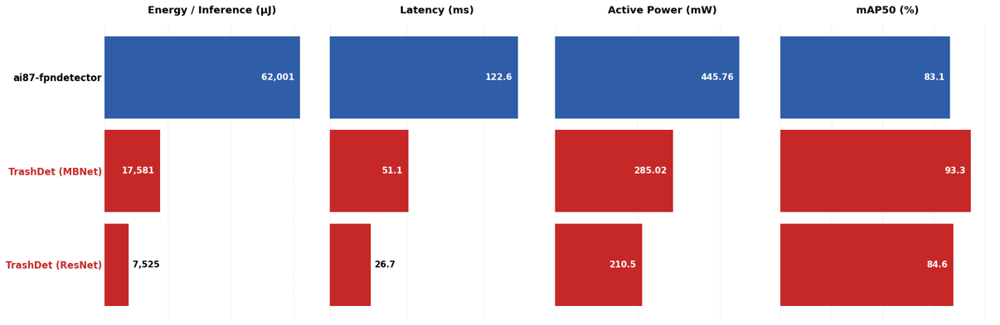

This paper addresses trash detection on the TACO dataset under strict TinyML constraints using an iterative hardware-aware neural architecture search framework targeting edge and IoT devices. The proposed method constructs a Once-for-All-style ResDets supernet and performs iterative evolutionary search that alternates between backbone and neck/head optimization, supported by a population passthrough mechanism and an accuracy predictor to reduce search cost and improve stability.
This framework yields a family of deployment-ready detectors, termed TrashDets. On a five-class TACO subset consisting of paper, plastic, bottle, can, and cigarette, the strongest variant, TrashDet-l, achieves 19.5 mAP50 with 30.5M parameters, improving accuracy by up to 3.6 mAP50 over prior detectors while using substantially fewer parameters.
On the MAX78002 microcontroller with the TrashNet dataset, two specialized variants, TrashDet-ResNet and TrashDet-MBNet, jointly dominate the ai87-fpndetector baseline. TrashDet-ResNet reaches 7,525 μJ energy per inference at 26.7 ms latency and 37.45 FPS, while TrashDet-MBNet improves mAP50 by 10.2 points. Together they reduce energy by up to 88%, latency by up to 78%, and average power by up to 53% compared to prior TinyML detectors.

TrashDet first constructs a unified OFA-style detection supernet spanning the backbone, neck, and YOLO-style detection head. It then alternates evolutionary search between the backbone and neck/head under hardware constraints, using population passthrough to preserve strong candidates across iterations and produce compact, deployment-ready waste detectors.

TrashDet builds on OFA-style residual blocks to support dynamic specialization over depth, width, and expansion ratio while remaining compatible with deployment constraints.

The lightweight predictor closely tracks true mAP50 and serves as an efficient surrogate during evolutionary search, reducing the need for repeated full evaluations.
| Method | Backbone | Neck | Head | Params | AR | mAP50 |
|---|---|---|---|---|---|---|
| YOLOv5m | CSPDarknet | SPPF + PANet | YOLOv3 | 21.2M | 22.3 | 15.9 |
| YOLOv8m | CSPDarknet | SPPF + PANet | YOLOv8 | 25.9M | 16.6 | 16.6 |
| TrashDet-m (Ours) | OFA ResNet | OFA PANet | OFA YOLOv3 | 21.0M | 19.1 | 18.6 |
| SWDet-m | ADA | EAFPN | YOLOv3 | 33.85M | 21.0 | 16.4 |
| Deformable DETR | ResNet-101 | DETR Encoder | DETR Decoder | 40M | 30.3 | 16.8 |
| RTMDet | RTMDet-l | PANet | RTMDet | 52.3M | 19.4 | 16.9 |
| AltiDet-m | ADA + HRFE | A-IFPN | YOLOv3 | 85.3M | 22.4 | 18.4 |
| TrashDet-l (Ours) | OFA ResNet | OFA PANet | OFA YOLOv3 | 30.5M | 18.6 | 19.5 |
TrashDet targets a stronger accuracy-efficiency trade-off on cluttered waste scenes, where precise detection is more important than maximizing recall alone.

| Method | Resolution | Params | AR | mAP50 | Latency (ms) | FPS |
|---|---|---|---|---|---|---|
| TrashDet-n | 640 | 1.2M | 21.2 | 11.4 | 2.21 | 452.79 |
| TrashDet-s | 640 | 7.9M | 16.9 | 15.8 | 3.83 | 261.06 |
| TrashDet-m | 640 | 21.0M | 19.1 | 18.6 | 4.39 | 227.70 |
| TrashDet-l | 640 | 30.5M | 18.6 | 19.5 | 5.07 | 197.08 |
All variants share the same OFA ResNet-style design space, letting practitioners choose a point on the accuracy-latency-model-size trade-off curve.

| Model | Resolution | Dataset | Params | Energy (μJ) | Latency (ms) | Power (mW) | FPS | mAP50 |
|---|---|---|---|---|---|---|---|---|
| ai87-fpndetector | 256×320 | TrashNet | 2.18M | 62001 | 122.6 | 445.76 | 8.16 | 83.1 |
| TrashDet - MBNet | 224×224 | TrashNet | 1.32M | 17581 | 51.1 | 285.02 | 19.57 | 93.3 |
| TrashDet - ResNet | 224×224 | TrashNet | 1.08M | 7525 | 26.7 | 210.5 | 37.45 | 84.6 |
TrashDet-ResNet provides the most aggressive efficiency setting, while TrashDet-MBNet delivers the strongest detection accuracy under the MAX78002 hardware budget.
@inproceedings{tran2026trashdet,
title={TrashDet: Iterative Neural Architecture Search for Efficient Waste Detection},
author={Tony Tran and Bin Hu},
booktitle={Proceedings of the IEEE/CVF Winter Conference on Applications of Computer Vision Workshops (WACVW)},
year={2026}
}